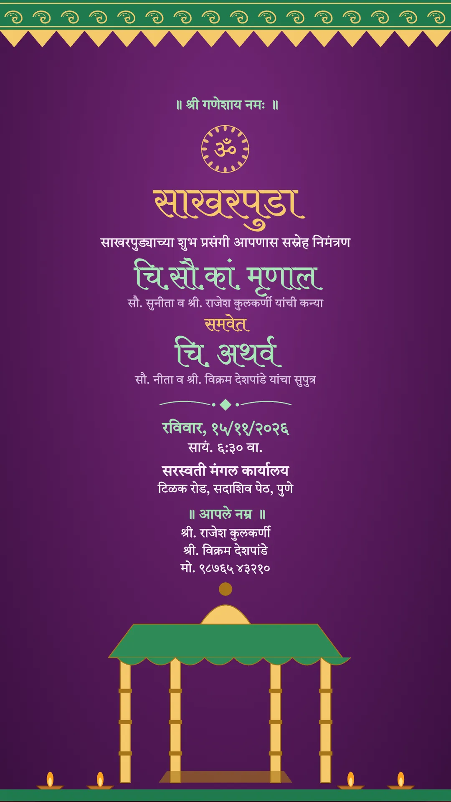

Designs › Ring Ceremony › Mandapam Mangalashtak
Mandapam Mangalashtak: Marathi engagement invitation

- Ceremony: Ring Ceremony
- Language: Marathi
- God or sacred symbol: Lord Ganesha
- Format: WhatsApp image (1080 x 1920 px) and 5 x 7 inch print PDF
- Pages: 1 (the invitation card)
About this design
The ground is a deep purple, the colour of a Paithani silk sari, a little lighter in the middle. Across the top runs a green band with small gold swirls, edged below by a row of yellow triangles pointing down, like a woven sari border. At the bottom stands a mandap with a green scalloped roof, a gold dome on top and four gold pillars, with two small lit diyas on each side of it and a green strip along the base.
The text opens with ॥ श्री गणेशाय नमः ॥ in small gold type and a gold Om emblem in a ring. साखरपुडा, the Marathi word for the engagement, is set large in gold. The names are in pale mint green, with चि.सौ.कां. before the bride's name and चि. before the groom's, and the parents' lines sit in small white type under each. The date, an evening time, a mangal karyalay in Sadashiv Peth, Pune and the आपले नम्र block with both fathers' names follow in white and gold, with all the numerals in Devanagari.
It suits Marathi Hindu families who want an engagement card in the colours of the silk many Marathi brides wear, rather than the usual red and gold. The design takes its name from the Mangalashtak verses of the wedding itself, but the sample is written for the sakharpuda, so you only need to change the names, date, venue and phone number. Compared with Gol Dhana Brass Thali, the Gujarati engagement card with the same Ganesha line and Om emblem on a chocolate brown ground, Mandapam Mangalashtak is brighter and has a drawn mandap where Gol Dhana has a brass thali. For the Haldi, Rangoli Haldi is also in Marathi with a Ganesha invocation.
Sample wording on this card
The card opens in the editor with this text. Change any line, or switch the card to another language.
॥ श्री गणेशाय नमः ॥
साखरपुडा
साखरपुड्याच्या शुभ प्रसंगी आपणास सस्नेह निमंत्रण
चि.सौ.कां. मृणाल
सौ. सुनीता व श्री. राजेश कुलकर्णी यांची कन्या
समवेत
चि. अथर्व
सौ. नीता व श्री. विक्रम देशपांडे यांचा सुपुत्र
रविवार, १५/११/२०२६
सायं. ६:३० वा.
सरस्वती मंगल कार्यालय
टिळक रोड, सदाशिव पेठ, पुणे
आपले नम्र
श्री. राजेश कुलकर्णी
श्री. विक्रम देशपांडे
मो. ९८७६५ ४३२१०